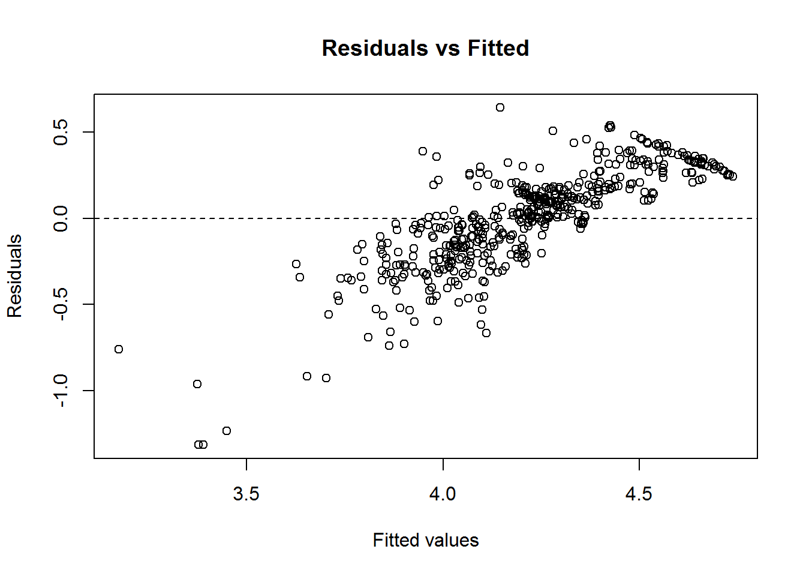
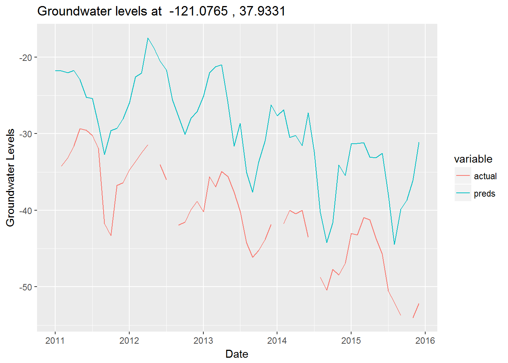

March 8, 2017
Groundwater monitoring and management is an essential issue in California because groundwater has tremendous values as a component of the hydrologic cycle for the environment and argriculture. This quarter I’m working at the Center for Water-Electricity Efficiency on campus for an interesting project about modeling groundwater levels. We aim to research on groundwater basins to support decisions around water reliability and resource sustainability by better understanding the groundwater levels change with respects to time and space. Through some literature research, spatial-temporal analysis and modeling is suitable for this project.
The data is provided from the Center for Water-Electricity Efficiency, which is also public available from the California Department of Water Resources. Besides, as we know that groundwater is very related to argriculture usage, we are specially interested in some probably useful variables to predict the ground water levels. Thus, we incorporate the evapotranspiration(ETo) data from the California Irrigation Management Information System (CIMIS) which currently manages over 145 active weather stations throughout the state. ETo data is often used as a proxy metric to indicate the demand of argriculture water usage. Most of the CIMIS stations produce estimates of reference evapotranspiration (ETo) for the station location and their immediate surroundings, often in agricultural areas. In the end, we had to clean and process the data sources to merge the well information, monthly ETo data and the groundwater measurement data. Note that we focused on the San Joquain Valley as our first investigation, since the spatial-temporal analysis and modeling tends to be more robust and sound in the relatively same area. We used the data from 2011 to 2016 as the training set to train our model and the data of 2017 as the test set for model evaluation. Outlying cases had been removed for robustness concern in modeling. The initial data cleaning script can be found here.
We know that some well locations track significantly more records of groundwater levels while other locations have missing values problems. Surface interpolation is common in spatial data analysis. On the other hand, forcasting on the time series of groundwater levels at a certain location would be also very useful. Thus, the goals of spatial-temporal modeling are two-folds: - Interpolate the missing values of groundwater levels at well locations - Forecast groundwater level at a certain time and location
library(tidyverse)
library(lubridate)
library(reshape2)
library(ggplot2)
library(ggthemes)
library(viridis)
library(zoo)
library(spTimer)sj_gwl = read.csv("sj_gwl_cleaned.csv")
eto_data = read.csv("ETo_cleaned.csv")
all_data <- merge(sj_gwl, eto_data, by = c("Year", "Month"))
cat('The number of well location in the San Joaquin Valley: ', n_distinct(sj_gwl$LATITUDE, sj_gwl$LONGITUDE))## The number of well location in the San Joaquin Valley: 436First, we want to have a sense about how many missing records for a well location on a Yearly basis. Idealy, we hope each location has 12 measurements each year. From the following table and the heatmap, we clearly see that there is a significant problem of missing sensor measurements in the monthly data and only a few wells keep track the groundwater levels throughout the year.
sj_gwl %>% group_by(CASGEM_STATION_ID, LONGITUDE, Year) %>% summarise(num_records = n()) %>%
reshape2::dcast(CASGEM_STATION_ID ~ Year, value.var = "num_records") %>%
mutate(total_records = rowSums(.[2:7],na.rm = TRUE)) %>% arrange(desc(total_records)) %>% head(20)## CASGEM_STATION_ID 2011 2012 2013 2014 2015 2016 total_records
## 1 2774 11 10 12 10 11 11 65
## 2 6911 12 10 12 10 8 8 60
## 3 27637 12 10 12 10 8 8 60
## 4 3738 12 9 9 9 10 10 59
## 5 28548 12 7 10 9 9 10 57
## 6 3437 12 6 7 9 11 11 56
## 7 3207 8 9 11 10 9 7 54
## 8 3485 9 7 11 7 7 10 51
## 9 3948 8 7 10 6 8 10 49
## 10 26720 12 10 10 4 7 6 49
## 11 26749 NA 8 9 8 10 8 43
## 12 37917 12 7 4 8 5 5 41
## 13 49530 12 12 3 NA NA NA 27
## 14 49531 12 10 NA NA 1 NA 23
## 15 49533 12 10 NA NA 1 NA 23
## 16 49529 12 10 NA NA NA NA 22
## 17 49527 12 9 NA NA NA NA 21
## 18 3281 NA NA NA 5 8 7 20
## 19 6760 3 3 4 3 3 4 20
## 20 3129 1 3 4 2 2 4 16count_byyear <- sj_gwl %>% group_by(CASGEM_STATION_ID, Year) %>% summarise(num_records = n()) %>%
reshape2::dcast(CASGEM_STATION_ID ~ Year, value.var = "num_records") %>%
mutate(total_records = rowSums(.[2:7],na.rm = TRUE))
count_byyear[is.na(count_byyear)] <- 0
newcount_byyear <- count_byyear %>% select(-total_records) %>% reshape2::melt(id = c("CASGEM_STATION_ID"))
newcount_byyear$CASGEM_STATION_ID <- as.character(count_byyear$CASGEM_STATION_ID)
newcount_byyear$variable <- as.character(newcount_byyear$variable)
ggplot(newcount_byyear, aes(x= variable, y=CASGEM_STATION_ID)) + geom_tile(aes(fill = value)) +
scale_fill_viridis(name="# Records") +
theme(axis.ticks.y=element_blank(), axis.text.y=element_blank()) +
labs(x= "Year", y= "Wells", title="Number of Measurements per year & well")We can see that the ETo and groundwater levels are time dependent and possibly have correlation with each other, although we just made one example to illustrate our “guess” here.
all_data$MEASUREMENT_DATE <- as.yearmon(paste(all_data$Year, all_data$Month), "%Y %m")
ggplot(all_data[all_data$CASGEM_STATION_ID==2774,], aes(x = MEASUREMENT_DATE, y = ETO_avg)) + geom_line() +
ggtitle('ETo change over time for the well location 2774 ')## Don't know how to automatically pick scale for object of type yearmon. Defaulting to continuous.ggplot(all_data[all_data$CASGEM_STATION_ID==2774,], aes(x = MEASUREMENT_DATE, y = Sol_Rad_avg)) + geom_line() +
ggtitle('Average Solar Radiation change for the well location 2774 ')## Don't know how to automatically pick scale for object of type yearmon. Defaulting to continuous.ggplot(all_data[all_data$CASGEM_STATION_ID==2774,], aes(x = MEASUREMENT_DATE, y = WSEL_calc)) + geom_line() +
ggtitle('Groundwater Levels change for the well location 2774 ')## Don't know how to automatically pick scale for object of type yearmon. Defaulting to continuous.Let’s also visualize the well locations on a map.
library(ggmap)
map <- get_map(location = 'San Joaquin', zoom =10, filename = 'gwl_map.png')
ggmap(map) +
stat_density2d(aes(x = LONGITUDE, y = LATITUDE, fill = ..level.., alpha= ..level..),
data = sj_gwl, size=2, bins = 4, geom = "polygon") +
facet_wrap(~ Year) + guides(alpha=FALSE, fill=guide_legend(title ="Measurements Density"))Since response variable groundwater levels is calculated by adding Ground Surface Elevation to either the Water Surface reading or the negative Reference Point reading, the WSEL can be negative. We would consider to properly transform the response variable for the purposes of normality and variance stabilizing in modeling. We can double check the distribution of the transformed variable. We use log transformation here while other box-cox transformations can be ultilized.
all_data$WSEL_transformed <- log(all_data$WSEL_calc + (1-min(all_data$WSEL_calc)))
hist(all_data$WSEL_calc, breaks = 25)hist(all_data$WSEL_transformed, breaks = 25)The nature of the given data has two components - space(latitude and longitude) and time. Studies in literatures show that spatial and temporal effects are important for modeling sensor data from monitoring stations. Spatio-temporal models would allow us to leverage the inference and predictive power of spatial and temporal effects. In our problems of modeling groundwater levels, we can think that the values are generated by an underlying process of interactions between space and time effects. And this underlying process is determined by unknown parameters with certain statistical properties. This hierarchical structure is well-suited to model in a Bayesian framework that we can incorporate the prior information and then use Bayesian updating to correct our beliefs in our parameters.
“This kind of hierarchical structure allows partial pooling so that external data can be included in a model even if these external data share only some characteristics with the current data being modeled.” quoted from this article summarizes the advantages and risk of using bayesian inference. For example, in our case, we have missing values at different time stamps or locations. The partial pooling would use the relevance between different time and nearby neighbour locations to make inferences about the missing values. The R package spTimer has a great implementation of Bayesian Spatial-Temporal model as it compares to other methods in its document. However, a little downside of this package is that it requires special format of input. We have to make sure each location has the same time scale.
sj_train <- sj_gwl %>% filter(Year <= 2015)
sj_train$WSEL_transformed <- log(sj_train$WSEL_calc + (1-min(sj_gwl$WSEL_calc)))
sj_test <- sj_gwl %>% filter(Year > 2015)
sj_test$WSEL_transformed <- log(sj_test$WSEL_calc + (1-min(sj_gwl$WSEL_calc)))To apply the B.S.T Model in SpTimer package, we need to carefully remove the locations too close with each others, which is probably due to some computation issues.
cat("number of wells in San Joaquin Valley:", n_distinct(sj_train$LATITUDE, sj_train$LONGITUDE), '\n')## number of wells in San Joaquin Valley: 430loc_df <- as.matrix(unique(sj_train[,c("LONGITUDE","LATITUDE")]))
fdm <- spT.geodist(loc_df[,1],loc_df[,2])
diag(fdm)<-NA
fdm<-cbind(c(fdm),1:dim(fdm)[[2]],sort(rep(1:dim(fdm)[[1]],dim(fdm)[[2]])))
fdm<-fdm[!is.na(fdm[,1]),]
tol <- 0.05
fdmis<-fdm[fdm[,1] < tol,] #sites too close
site_Todelete = unique(c(fdmis[,2],fdmis[,3]))
cat("number of well locations being too close with each other: ",length(site_Todelete),'\n')## number of well locations being too close with each other: 22loc_df = as.data.frame(loc_df)
loc_df$site_id = 1:dim(loc_df)[1]
nloc_df = loc_df %>% filter(!site_id %in% site_Todelete)
sj_train_cleaned <- left_join(nloc_df, sj_train) %>% group_by(LONGITUDE,LATITUDE, Year, Month) %>%
summarise(WSEL_transformed = mean(WSEL_transformed))## Joining, by = c("LONGITUDE", "LATITUDE")Transform the input format such that each location has the same time units.
sj_train_cleaned$place <- paste(sj_train_cleaned$LONGITUDE,sj_train_cleaned$LATITUDE,sep="_")
N <- n_distinct(sj_train_cleaned$LATITUDE, sj_train_cleaned$LONGITUDE)
Y <- n_distinct(sj_train_cleaned$Year)
tmp_data <- data.frame(matrix(NA, N*Y*12, 3))
tmp_data[,1] <- as.character(rep(unique(sj_train_cleaned$place), each = Y*12))
tmp_data[,2] <- as.numeric(rep(2011:2015,each = 12))
tmp_data[,3] <- as.numeric(1:12)
colnames(tmp_data) <- c("place", "Year", "Month")
tmp_sj_train_cleaned <- left_join(tmp_data, sj_train_cleaned, by = c("place", "Year", "Month"))
train_data <- left_join(tmp_sj_train_cleaned, eto_data, by = c("Year", "Month"))#merge the eto data
#nall_data = merge(all_data,ntest,by =c("place", "Year", "Season"),)
train_data$LONGITUDE = sapply(train_data[,"place"],function(x) as.numeric(strsplit(x, split='_')[[1]][1]))
train_data$LATITUDE = sapply(train_data[,"place"],function(x) as.numeric(strsplit(x, split='_')[[1]][2]))dim(train_data)## [1] 24480 8sum(is.na(train_data$WSEL_transformed))/dim(train_data)[1] #33%## [1] 0.8978758From my trials and errors, I found a lot of missing values in the training data would result in the unstatability of computation(failure to run). Thus, we could rather choose the locations without missing too much data and reduce the computation complexity. Later, we could use the fitted model to predict the missing values.
sj_gwl$place <- paste(sj_gwl$LONGITUDE,sj_gwl$LATITUDE,sep="_")
target_locs <- sj_gwl %>% group_by(place, Year) %>% summarise(num_records = n()) %>%
reshape2::dcast(place ~ Year, value.var = "num_records") %>%
mutate(total_records = rowSums(.[2:7],na.rm = TRUE)) %>% arrange(desc(total_records)) %>%
filter(total_records>15) %>% select(place)
target_locs <- target_locs$place
target_train_data <- train_data[train_data$place %in% target_locs, ]We decided to fit the spatial-temporal AR model. The AR model can be expressed as the following: \[ \begin{aligned} Z_{lt} &= O_{lt} + \epsilon_{lt} \\ O_{lt} &= \rho O_{lt-1} X_{lt}\beta + \eta_{lt} \end{aligned} \]
\(Z\) is the observed values. \(O\) is the expected values. \(\epsilon\) refers to independent random noise. \(\eta\) refers to the random spatio-temporal interaction effect following multivariate normal distribution mean 0 and a certain covariance matrix(function). \(\beta\) refers the predictor coefficient estimates. \(l\) symbols for each location and \(t\) indicates each time stamp. This AR model has an addition term \(\rho O_{lt-1}\) to introduce the time dependency structure like time series. The underlying unknown parameters are \(\theta=( \beta, \sigma_{\epsilon}, \sigma_{\eta}, \phi, \upsilon, \mu_l , \sigma_l)\) where \((\mu_l , \sigma_l)\) controls the time series structure for each location and \((\phi, \upsilon)\) controls the rate of decay/variation of the correlation matrix as the distance of two locations increases. The spT.priors function allows to specify the priors of the parameters. We would use the statistics from the The spT.decay function is used to assign prior distribution for the spatial decay parameter.
set.seed(2017)
#mean.prior <- mean(train_data$WSEL_transformed, na.rm=T)
#var.prior <- var(train_data$WSEL_transformed, na.rm=T)
#priors <- spT.priors(model = "AR", inv.var.prior = Gamm(2,1), beta.prior = Norm(mean.prior, 100))
gwl.arx <- spT.Gibbs(formula = WSEL_transformed ~ ETO_avg + Sol_Rad_avg, data =
target_train_data,
model ="AR", nItr=5000, nBurn=1000,
spatial.decay= spT.decay(distribution = Gamm(a = 2, b = 1), tuning = 0.08),
coords = ~LONGITUDE+LATITUDE)##
## Output: AR models
## ---------------------------------------------------------------
## Sampled: 5000 of 5000, 100.00%.
## Batch Acceptance Rate (phi): 20.90%
## Checking Parameters:
## phi: 0.0656, rho: 0.5466, sig2eps: 0.1447, sig2eta: 0.0921
## beta[1]: 2.0514 beta[2]: -0.7290 beta[3]: 0.0001
## ---------------------------------------------------------------
## ##
## # nBurn = 1000 , Iterations = 5000 .
## # Overall Acceptance Rate (phi) = 20.9 %
## ##
## ##
## # Elapsed time: 8.86 Sec.
## ##
##
## # Model: ARPMCC refers to predictive model choice criteria, which is commonly used as the criteria to compare and choose model. The lower, the better. The acceptance rate is suggested to be in the range between 15% - 40% from the reference.
# Model selection criteria
gwl.arx$PMCC ## Goodness.of.fit Penalty PMCC
## values: 75.41 112.67 188.08Check the model fit.
spT.validation(target_train_data$WSEL_transformed[!is.na(target_train_data$WSEL_transformed)], gwl.arx$fitted[,1][!is.na(target_train_data$WSEL_transformed)])## ##
## Mean Squared Error (MSE)
## Root Mean Squared Error (RMSE)
## Mean Absolute Error (MAE)
## Mean Absolute Percentage Error (MAPE)
## Bias (BIAS)
## Relative Bias (rBIAS)
## Relative Mean Separation (rMSEP)
## #### MSE RMSE MAE MAPE BIAS rBIAS rMSEP
## 0.1404 0.3747 0.2960 7.4068 -0.0041 -0.0010 0.5308From the metrics, it seems the model fits reasonably well. From the residual plots, it is not very promising since it seems to have a linear trend and there are some outlying cases at the tails.
plot(gwl.arx, residuals=TRUE)
We can predict on the origin training dataset which has more locations. Note that the output from the predict function is a list, the predictioned are generated from the posterior distributions. The samples are stored in the pred.sample sublist.
interpolation.ar <- predict(gwl.arx, newdata= train_data,
newcoords=~LONGITUDE+LATITUDE)##
## Prediction: AR models
## #
## # Tolerance Limit: 2
## # There are some Prediction locations very close to the Fitted locations.
## #
## [1] "Distance: 0 Predicted location: 12 Fitted location: 1 "
## [1] "Distance: 0 Predicted location: 13 Fitted location: 2 "
## [1] "Distance: 1.27 Predicted location: 14 Fitted location: 2 "
## [1] "Distance: 1.27 Predicted location: 13 Fitted location: 3 "
## [1] "Distance: 0 Predicted location: 14 Fitted location: 3 "
## [1] "Distance: 1.78 Predicted location: 18 Fitted location: 3 "
## [1] "Distance: 1.78 Predicted location: 14 Fitted location: 4 "
## [1] "Distance: 0 Predicted location: 18 Fitted location: 4 "
## [1] "Distance: 1.1 Predicted location: 20 Fitted location: 4 "
## [1] "Distance: 0 Predicted location: 19 Fitted location: 5 "
## [1] "Distance: 0 Predicted location: 27 Fitted location: 6 "
## [1] "Distance: 0 Predicted location: 41 Fitted location: 7 "
## [1] "Distance: 0.54 Predicted location: 46 Fitted location: 7 "
## [1] "Distance: 0 Predicted location: 49 Fitted location: 8 "
## [1] "Distance: 0 Predicted location: 57 Fitted location: 9 "
## [1] "Distance: 0 Predicted location: 58 Fitted location: 10 "
## [1] "Distance: 1.35 Predicted location: 62 Fitted location: 10 "
## [1] "Distance: 1.85 Predicted location: 62 Fitted location: 11 "
## [1] "Distance: 0 Predicted location: 64 Fitted location: 11 "
## [1] "Distance: 1.64 Predicted location: 65 Fitted location: 11 "
## [1] "Distance: 1.92 Predicted location: 65 Fitted location: 12 "
## [1] "Distance: 0.14 Predicted location: 76 Fitted location: 12 "
## [1] "Distance: 0 Predicted location: 77 Fitted location: 12 "
## [1] "Distance: 1.22 Predicted location: 88 Fitted location: 12 "
## [1] "Distance: 1.56 Predicted location: 73 Fitted location: 13 "
## [1] "Distance: 1.31 Predicted location: 74 Fitted location: 13 "
## [1] "Distance: 0 Predicted location: 82 Fitted location: 13 "
## [1] "Distance: 1.1 Predicted location: 87 Fitted location: 14 "
## [1] "Distance: 1.94 Predicted location: 92 Fitted location: 14 "
## [1] "Distance: 0 Predicted location: 96 Fitted location: 14 "
## [1] "Distance: 1.75 Predicted location: 104 Fitted location: 14 "
## [1] "Distance: 1.52 Predicted location: 105 Fitted location: 14 "
## [1] "Distance: 0 Predicted location: 101 Fitted location: 15 "
## [1] "Distance: 0.82 Predicted location: 112 Fitted location: 15 "
## [1] "Distance: 1.85 Predicted location: 95 Fitted location: 16 "
## [1] "Distance: 1.62 Predicted location: 129 Fitted location: 16 "
## [1] "Distance: 0 Predicted location: 130 Fitted location: 16 "
## [1] "Distance: 0 Predicted location: 226 Fitted location: 17 "
## [1] "Distance: 1.8 Predicted location: 248 Fitted location: 17 "
## [1] "Distance: 1.36 Predicted location: 233 Fitted location: 18 "
## [1] "Distance: 1.1 Predicted location: 237 Fitted location: 18 "
## [1] "Distance: 1 Predicted location: 249 Fitted location: 18 "
## [1] "Distance: 0 Predicted location: 252 Fitted location: 18 "
## [1] "Distance: 1.51 Predicted location: 264 Fitted location: 18 "
## [1] "Distance: 0 Predicted location: 258 Fitted location: 19 "
## [1] "Distance: 1.97 Predicted location: 274 Fitted location: 19 "
## [1] "Distance: 1.48 Predicted location: 260 Fitted location: 20 "
## [1] "Distance: 0 Predicted location: 268 Fitted location: 20 "
## [1] "Distance: 1.99 Predicted location: 312 Fitted location: 21 "
## [1] "Distance: 1.62 Predicted location: 316 Fitted location: 21 "
## [1] "Distance: 0 Predicted location: 327 Fitted location: 21 "
## [1] "Distance: 1.64 Predicted location: 331 Fitted location: 21 "
## [1] "Distance: 1.57 Predicted location: 332 Fitted location: 21 "
## [1] "Distance: 0 Predicted location: 362 Fitted location: 22 "
## [1] "Distance: 2 Predicted location: 387 Fitted location: 23 "
## [1] "Distance: 0 Predicted location: 393 Fitted location: 23 "
## [1] "Distance: 1.53 Predicted location: 395 Fitted location: 23 "
## [1] "Distance: 1.42 Predicted location: 397 Fitted location: 23 "
## [1] "Distance: 0.96 Predicted location: 400 Fitted location: 23 "
## [1] "Distance: 1.42 Predicted location: 406 Fitted location: 23 "
## [1] "Distance: 0 Predicted location: 394 Fitted location: 24 "
## #
## # Romove the locations and run again.
## #
## -------------------------------------------------
## Sampled: 400 of 4000, 10.00%
## -------------------------------------------------
## -------------------------------------------------
## Sampled: 800 of 4000, 20.00%
## -------------------------------------------------
## -------------------------------------------------
## Sampled: 1200 of 4000, 30.00%
## -------------------------------------------------
## -------------------------------------------------
## Sampled: 1600 of 4000, 40.00%
## -------------------------------------------------
## -------------------------------------------------
## Sampled: 2000 of 4000, 50.00%
## -------------------------------------------------
## -------------------------------------------------
## Sampled: 2400 of 4000, 60.00%
## -------------------------------------------------
## -------------------------------------------------
## Sampled: 2800 of 4000, 70.00%
## -------------------------------------------------
## -------------------------------------------------
## Sampled: 3200 of 4000, 80.00%
## -------------------------------------------------
## -------------------------------------------------
## Sampled: 3600 of 4000, 90.00%
## -------------------------------------------------
## -------------------------------------------------
## Sampled: 4000 of 4000, 100.00%
## -------------------------------------------------
## ##
## # Predicted samples and summary statistics are given.
## # nBurn = 1000 . Iterations = 5000 .
## ##
## ##
## # Elapsed time: 7 Min. 42.81 Sec.
## ##We can use the Mean sublist from the output as our predictions. The number of rows means the time range(in order) and the number of columns means the number of unique of locations.
dim(interpolation.ar$Mean)## [1] 60 408We need to rescale the prediction into the original scale to compare the fitting performance. We can observe that the model tends to underfit.
spt_pred <- as.vector(matrix(interpolation.ar$Median, ncol = 1))
train_data$actual <- exp(train_data$WSEL_transformed) - (1-min(sj_gwl$WSEL_calc))
train_data$preds <- exp(spt_pred)-(1-min(sj_gwl$WSEL_calc))
plot(train_data$preds, train_data$actual)
lines(x = c(-100,100), y = c(-100,100))What if we want to check out the model performance for a specific location?
plot_gwl <- function(long, lat, plot_data){
plot_data$Date <- as.yearmon(paste(plot_data$Year, plot_data$Month), "%Y %m")
plot_data %>% filter(LONGITUDE==long, LATITUDE==lat) %>%
select(Date, actual, preds) %>% melt(id="Date") %>%
ggplot(aes(x=Date,y= value,colour= variable,group=variable)) +
geom_line() + labs(x= "Date", y= "Groundwater Levels", title= paste("Groundwater levels at ", long,',', lat))
}Let’s check one location that has relatively rich data points. It’s clear to see that the trend component of the time series is captured well in this case, while there is some bias between the actual values and prediction/interpolations.
plot_gwl(-121.0765, 37.9331, train_data)## Warning: Removed 1 rows containing missing values (geom_path).
In the next steps, we need to come up with ways for bias correction.
Being able to understand and predict groundwater level changes would give us insights like how to save energy and how to distribute water resource in a more efficient way. In the project, I communicated and learned from domain experts to better understand the context, proposed ways to collect/aggregate useful information and tried to improve the spatial temporal model. However, this kind of modeling problem is challenging because it’s related to the complex climate system. And there is still a lot of room to verify our hypothesis and improve our modeling. A few other ideas are worthwhile to try: